The stumbling block in the past for adopting a revision control system for APSC1299 has been that the systems that MPlab IDE has supported natively have all been centralized revision control systems. Any of those systems would be more trouble than they were worth for the type of work the students were doing. A distributed version control system would make a lot more sense for use but I did not start to look at those before simply because I first focused on what MPlab IDE had direct support for.
Having spent some time looking at git (a distributed version control system) I have come to believe it is a system easy enough to use even though it is not directly supported by MPlab IDE and that using it would have some significant advantages to our students.
The alternative (used so far) has been to copy the project directory to a directory with a new name for a new version of a project. Students are also expected to keep notes of changes to a project in a notebook. git provides a very easy method to keep old versions of a project that one might want to revert back to. It also provides useful tools that would help one keep accurate notes on changes to a project and progress. It also provides useful tools for project collaboration (group work).
by Dan Peirce B.Sc.
Reformatted from dokuwiki
So far the notes in the sections that follow are based on trying out procedures given at:
http://www-cs-students.stanford.edu/~blynn/gitmagic/ch01.html -- helpful
The standford.edu page was helpful in getting started and trying some examples but the standford.edu page on it's own leaves one with many unanswered questions and does not provide a full explanation of default workflow and possible shortcuts (although shortcuts are used in the examples).
A more comprehensive understanding of git concepts can be found in the ebook from:
The initial notes below are a result of working through a tutorial. I have been using git for a while now and think I could better organize new notes on a new page. I will call the new page git_notes.
I have been playing with git on the Raspberry Pi. I will document this as time permits.
This shows Firefox running on a windows machine which is pointed at the git repository on the Raspberry Pi. The Raspberry Pi is running headless to run git command a secure shell was used over the LAN. The SSH server runs on the Raspberry Pi and it can be accessed on a windows machine using PuTTY.
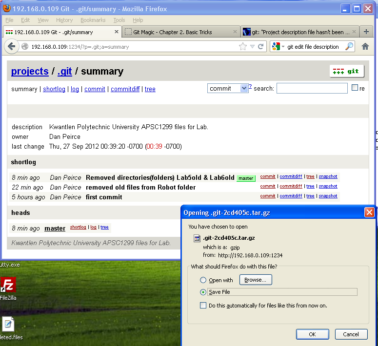
Bitbucket allows private free repositories. Other online git hosting sights I have looked at allow free public repositories but charge for private repositories. It was simple to create an account, create a bare repository and push the local repository from the Raspberry Pi onto it.
danp@raspberrypi ~ $ cd apsc1299 danp@raspberrypi ~/apsc1299 $ git remote add origin https://danpeirce@bitbucket.org/danpeirce/apsc1299labs.git danp@raspberrypi ~/apsc1299 $ git push -u origin master Password for 'https://danpeirce@bitbucket.org': Counting objects: 49, done. Compressing objects: 100% (40/40), done. Writing objects: 100% (49/49), 32.18 KiB, done. Total 49 (delta 7), reused 0 (delta 0) remote: bb/acl: danpeirce is allowed. accepted payload. To https://danpeirce@bitbucket.org/danpeirce/apsc1299labs.git * [new branch] master -> master Branch master set up to track remote branch master from origin. danp@raspberrypi ~/apsc1299 $ echo "# This is my README" >> README.md danp@raspberrypi ~/apsc1299 $ git add README.md danp@raspberrypi ~/apsc1299 $ git commit -m "Adding a README (suggested on bitbucket)" [master b11846b] Adding a README (suggested on bitbucket) 1 file changed, 1 insertion(+) create mode 100644 README.md danp@raspberrypi ~/apsc1299 $ git push -u origin master Password for 'https://danpeirce@bitbucket.org': Counting objects: 4, done. Compressing objects: 100% (2/2), done. Writing objects: 100% (3/3), 327 bytes, done. Total 3 (delta 0), reused 0 (delta 0) remote: bb/acl: danpeirce is allowed. accepted payload. To https://danpeirce@bitbucket.org/danpeirce/apsc1299labs.git 2cd405c..b11846b master -> master Branch master set up to track remote branch master from origin.
Scroll the frame shown below to the right to find download link. (Bitbucket
recently changed the format of the page)
Look for this:
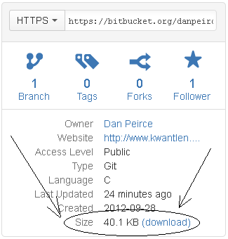
downloaded git from windows from link provided in bitbuckets
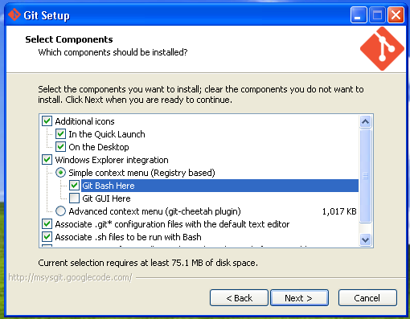
Launching git on my windows machine gives me a unix/linux like environment.
Knowing some UNIX commands is helpful (as it is on the Raspberry Pi}.
First task to find where one is in the file system with a "pwd" (print working directory).
change to the desired directory to make a repository. I have a backup for this website and thought it would be good to make that into a git repository.
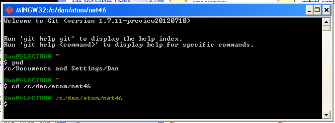
$ git init $ git add functions $ git add hello33.c $ git config --global user.email "peirce.dan@gmail.com" $ git config --global user.name "Dan Peirce" $ git commit -m "first commit"
So I created a repository to for 3.3 volt hello world project for the pic18lf2620. Only .c and .h files were added to the project repository (all the files in the functions folder and the hello33.c file.
$ git remote add origin https://danpeirce@bitbucket.org/danpeirce/hello33.git $ git push -u origin master # to push changes for the first time
Of course there is more to git than just setting up a repository but this is a start.
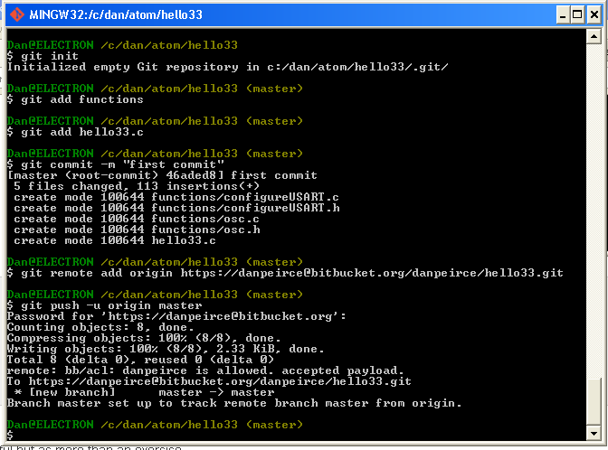
The image above shows that I pushed the project to bitbucket. This is into a private repository that bitbucket allows for free. This could be useful for me so that I could work on the same project at home and at work on different computers. bitbucket also allows private team projects. This way students working in groups could have their own branches of a repository on their own computers and yet could share their branch (version) with the team (group). git allows branches to be merged. This has been developed for teamwork.
On the prep-room computer I also did an install but this time took all of the defaults. This means that the git GUI, and git integration with windows explorer were also installed. The integration with windows explorer means that it is possible to get git options from within windows explorer (I don't know how buggy this might be).
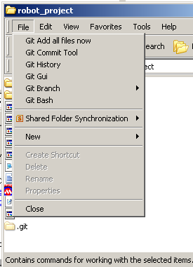
I wanted to create a repository for an individual apsc1299 project including:
If I were to redo this project (and I probably will) I would us a .gitignore file and retain the file structure used in previous years.
The .gitignore file would make it easy to follow all files in the project except those generated by MPlab (which all have known file extensions). It is the .c , .h and *.mcp (project) files as well as any readme files that need to be included.
All .o , .cof , .hex , .map and *.mcs files generated by MPlab should be excluded and not be tracked.
I did not include the workspace file or any of the object files. To make this easy I rearranged the file structure for the project a bit. The function folder and the robot folder both sit in the robot_project folder. The files that MPlab creates all end up in the project folder robot_project. With this setup git commands can be used to add functions, robot and the project file robot_project.mcp to the repository and the rest of the files are intentionally left out of the repository. Also in creating the project in MPlab I was careful to ensure all paths were relative so it would still be valid regardless of the actual path of the project folder.
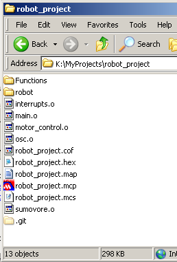
The repository was created as follows:
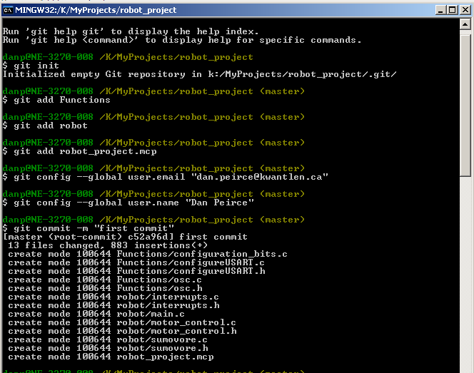
I made a change to a comment in main.c and committed the change. From windows explorer git history was opened and showed this:
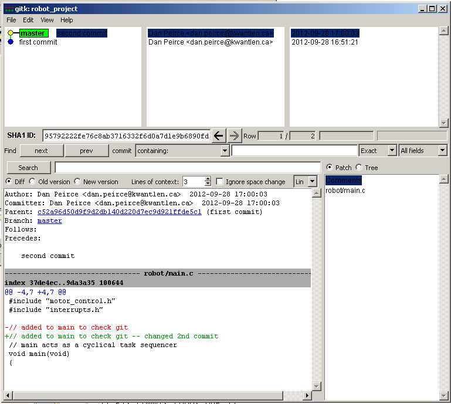
Also, checked out first commit and the file main.c changed as expected.
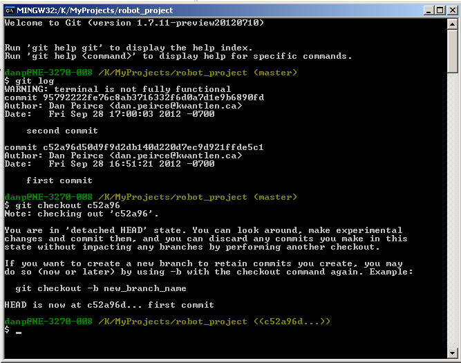
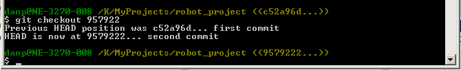
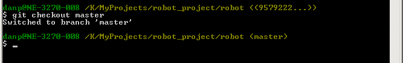
The project was pushed to bitbucket from the prep room computer. The project was cloned from bitbucket to my home computer.
$ git clone https://danpeirce@bitbucket.org/danpeirce/robot-from-simple-curve-follower.git
I was able to open the project file in windows explorer and double click on the project file to launch MPlab IDE 8.5. The project build worked as expected (and generated the expected object files which are not included in the repository).
I made a change by uncommenting the threshold assignment in main.c, committed the change locally and pushed the updated project back onto bitbucket.
$ git push origin master
bitbucket accepted the update.
I made this repository public at https://bitbucket.org/danpeirce/robot-from-simple-curve-follower.
A zip file of the current source code can be obtained simply by using this link https://bitbucket.org/danpeirce/robot-from-simple-curve-follower/get/e15f8ef55da6.zip
A wiki page was added to the code repository for this project. It contains a short description and links back to our kwantlen pages.
Since this is now public I did not want to keep changes that were actually just about messing around to see how the system works. It is possible to delete/destroy all changes after a give commit if one knows the hash number of the commit we want as the new master (if not know $ git log gives a list of commits with hash numbers and commit messages).
$ git reset --hard c52a96 HEAD is now at c52a96d first commit
Then the change was pushed onto bitbucket. The push is rejected unless a -f switch is used to force it (git on bitbucket will assume that the push is being done from an old version of the repository because the newer stuff is missing -- one would want to only use -f when they really intend to permanently delete newer changes).
$ git push https://danpeirce@bitbucket.org/danpeirce/robot-from-simple-curve-follower.git -f
On bitbucket and similar sites it is customary to provide a README file. One of the file formats accepted on bitbucket is Markdown.
Markdown is a lightweight markup language that can be converted automatically to xhtml. It allows multiple levels of headings, lists, tables and hyperlinks. The markup is simple and easy to type relative to valid xhtml. The converted contents of the README.md file will be shown on bitbucket on the overview tab along with information about recent commits.
In the following frame the README information can be seen beneath the Recent Commit information:
The actual content of README.md is as follows:.
#Simple Curve Follower This is example code for APSC1299 at Kwantlen Polytechnic University. ##Target This project is for a PIC18F4525 on a modified Sumovore robot. (we upgrade the MCU and modify the wiring to allow dynamic braking). ##Tools The project file was created in MPlab IDE version 8.5. The student version C18 compiler is assumbed. ##Purpose As is this code allows the robot to follow simple curved lines. It is a starting point for students who will modify the code so that the robot will be able to follow much more complex lines with abrupt sharp turns, gaps in the line, crossing lines and other obstacles. See * [APSC1299](http://www.kwantlen.ca/science/physics/engineering/APSC1299/) * [Changes to Sumovore and BB2](http://www.kwantlen.ca/science/physics/faculty/dpeirce/notes/sumovore_maintenance_log/ChangesToSumovoreBB2.html) * Sumovore kit can be purchased from [Solarbotics: sumovore](http://www.solarbotics.com/product/k_sv/) * PIC brainboard can also be purchased from [Solarbotics: PIC brainboard 2](http://www.solarbotics.com/product/k_sv-pic) * we replace the PIC16F877A with a PIC18F4525. see link to ChangesToSumovoreBB2.html above for other changes...
Notes at simple_led_and_echo_program_in_c
Also see https://bitbucket.org/danpeirce/pic18_serial_io/overview
Notes at http://www3.telus.net/danpeirce/git/git_notes.xhtml.
Found out that MINGW32 (git Bash) includes Vim.
There is no default editor set up for Git for Windows. This can be changed by
git config --global core.editor "vim"
This has the advantage that if a git commit is done without a -m switch
the Vim editor will come up rather than having the commit rejected. This can
be handy because comments appear in the editor that can be helpful in
composing the commit message.
Decided to try Vim on the Raspberry Pi also. Found only Vim-tiny was installed
so I installed Vim (Vim-runtime). Before I make that change I was not able to
remap the jk to
:imap jk <esc>
also used
:mkv
Which saved the change to the ~/.vimrc file. This is helpful because